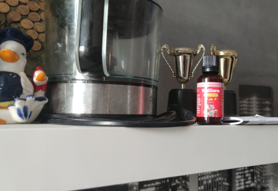
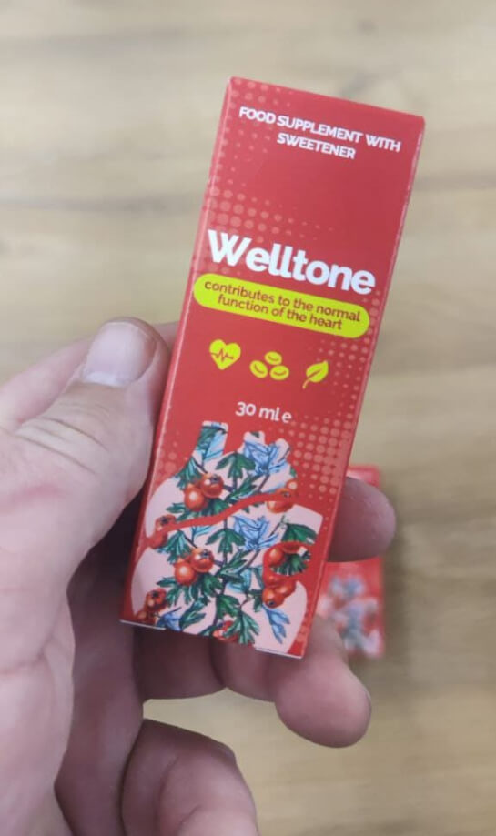

DRAUDŽIAMAS ATRADIMAS: Lietuvos kardiologui gresia atleidimas iš darbo už tai, kad televizijos laidoje įvardijo vaistą nuo hipertenzijos ir 7 "nepagydomų" pagyvenusių žmonių ligų
Laidos įrašymo metu įvyko nemalonus incidentas, supykdęs aukštus kardiologijos gydytojus. Gydytojas skundėsi mūsų Sveikatos apsaugos ministerija, kad ši sąmoningai slepia veiksmingą gydymą nuo hipertenzijos, kuris šalyje egzistuoja jau seniai!
Savo pareiškimu jis šokiravo televizijos laidų vedėją ir žiūrovus.
"Kraujospūdis! Tai yra pagrindinis žmonių žudikas. Ne tik Europoje, bet ir visame pasaulyje. O jūs visi elgiatės kaip įprastai. Jie nepastebi pažangių įrankių, padedančių išspręsti šią problemą."
Lietuvos sveikatos apsaugos ministerija prognozuoja, kad 2023 metais nuo širdies ir kraujagyslių ligų mirs daugiau nei 100 000 kroatų. kas trečias lietuvis miršta nuo širdies smūgio. Aukštas kraujospūdis, užsikimšusios arterijos ir serganti širdis lemia ankstyvą mirtį! – taip patvirtino gydytojas kardiologas ekspertas Ramūnas Kerpauskas.
Kaip pavyzdį gydytojas pateikė stulbinančią statistiką!
Širdies ir kraujagyslių ligos yra pagrindinė mirties priežastis pasaulyje. 94% širdies priepuolių ir insultų sukelia aukštas kraujospūdis. Aukštas kraujospūdis yra mirtinas 89% širdies priepuolių ir insultų. Kalbant apie specifines vertes, aukštas kraujospūdis lemia maždaug 77–78% „natūralių“ mirčių mūsų šalyje. Absoliučiais skaičiais tai sudaro apie 175 000 mirčių praėjusiais metais!
dr. Ramūnas Kerpauskas piktinosi, kad privačios ir valstybinės klinikos visiškai ignoruoja pažangius gydymo būdus, galinčius pašalinti hipertenziją ir 7 tariamai nepagydomas širdies ir kraujagyslių bei širdies ligas!
Televizijos laidos redaktoriai neatkreipė deramo dėmesio į pakviesto eksperto žodžius. Dabar jiems gresia bauda!
Mūsų redaktoriai nusprendė patys atlikti tyrimą ir surasti šį ekspertą. Jis su dideliu entuziazmu atsakė į mūsų klausimus. TAI SVARBI INFORMACIJA KIEKVIENAM HIPERTONIJA SERGANČIAMS IR PENSIJOMS!
Ramūnas Kerpauskas
Lietuvos kardiologų draugijos garbės daktaras, profesorius, Europos Sąjungos garbės daktaras
Patirtis: 31 metai
„Žmonės miršta nuo užterštų arterijų ir venų! Prisiminkite tai kartą ir visiems laikams!
Žurnalistas: Sveiki! Atrodo, kad visi jūsų kolegos žino apie televizijos skandalą. Kodėl nebijojote tokio dalyko?
Dr. Kerpauskas: Laba diena. Žinau apie riziką, bet nebegalėjau meluoti. Negalite paslėpti specifinio hipertenzijos sprendimo. Aš esu gydytojas, daviau Hipokrato priesaiką ir jos laikausi. Ir aš labai džiaugiuosi, kad grįžai pas mane, nes galiu pakartoti savo žodžius. Šiandieninių žmonių godumas ir godumas negali būti išmatuoti.
Žurnalistas: Sakėte, kad be tablečių galite gyventi iki 100 metų. Tereikia susidoroti su užsikimšusiomis kraujagyslėmis. Ar taip?
Dr. Kerpauskas: Pateiksiu keletą faktų, kurie, tikiuosi, privers susimąstyti.
Dažniausia mirties priežastis planetoje yra ŠIRDIES IR KRAUJO INSTALIŲ LIGOS. Pagrindinė tokių su amžiumi atsirandančių ligų atsiradimo priežastis yra CHOLESTEROLIS. Cholesterolis, pasirodo, yra pavojingiausia medžiaga planetoje. Kad cholesterolis žudo daugiau žmonių nei alkoholis, nikotinas ir narkotikai kartu paėmus.
94% atvejų, jei žmogus miršta nesulaukęs 80 metų, kaltas blogasis cholesterolis.
Cholesterolis kenkia sveikatai. Jei cholesterolis nesikauptų kraujagyslėse, žmogus nesunkiai išgyventų iki 100 metų.
Kaip atrodo cholesterolis ir kas tai yra? Pateiksiu paprastą palyginimą: įsivaizduokite riebalus ant keptuvės, kuri atvėso ir sustingo. Maždaug taip atrodo cholesterolis.
Būdama kraujyje, ši medžiaga nusėda išilgai kraujagyslių sienelių. Pirmiausia tai plonas sluoksnis (per 20-25 m.), vėliau greitai sustorėja cholesterolio sluoksnis (25-40 m.), nes vis daugiau dalelių prilimpa prie lipnaus paviršiaus. DĖL CHOLESTEROLIO 40 METŲ siaurina arterijų spindį. O širdis neturi nieko kito, kaip tik didinti kraujospūdį. Žmogus patiria slėgio šuolius ir su amžiumi susijusią hipertenziją su visomis pasekmėmis. Ir tai nėra pavojingiausia!
Daug pavojingiau, kai cholesterolis visiškai užkemša smulkias kraujagysles, kurios prasiskverbia į visus audinius. Dėl pablogėjusio aprūpinimo krauju vidaus organuose vystosi patologiniai procesai. Ir tai yra lėtinių ligų vystymosi pagrindas.

Cholesterolis. Per 50-60 gyvenimo metų organizme susikaupia apie 3,5 kg šios pavojingos medžiagos!
Žodžiu, viskas organizme priklauso nuo kraujagyslių būklės. Jei kojų kraujagyslės užsikimšusios, tai sukelia venų varikozę, nuolatinį patinimą ir nuolatinį sunkumo jausmą kojose. Jei užsikimšimas yra kepenyse, atsiranda hepatozė ir cirozė; jei jis yra sąnariuose, atsiranda artritas, artrozė ar skausmas stuburo srityje. Jei akių kraujagyslės užsikemša, žmogus pamažu praranda regėjimą.
Cholesterolio nusėdimas yra neišvengiamas. Tai atsitinka kiekvieno žmogaus kraujagyslėse. O kraujagyslių užsikimšimas yra greito senėjimo priežastis.
CHOLESTEROLIS YRA TAS, KURIE PRADEDA ORGANIZMO SENĖJIMO GRANDINĘ REAKCIJĄ. O būtent kraujagyslių užsikimšimas sutrumpina žmogaus gyvenimo trukmę, kurią jam lėmė gamta.
Užuot gyvenęs 100 metų, žmogus dažnai nesulaukia net 70! Ypač tiems, kurie senatvine hipertenzija suserga 40–50 metų amžiaus. Beje, tai vienas iš ryškių kraujagyslių užsikimšimo simptomų.
Per 50 gyvenimo metų žmogaus kūne užsikemša viso kūno kraujagyslės. Kuo nešvaresnės kraujagyslės, tuo daugiau lėtinių ligų, tuo greičiau žmogus sensta ir blogiau jaučiasi!
Kraujagyslės ir kraujospūdis Lietuvoje negydomi!
Žurnalistas: Taigi jūs sakote, kad visi šiuolaikiniai vaistai nuo hipertenzijos yra neveiksmingi?
Dr. Kerpauskas: Dažniausiai skiriami antihipertenziniai vaistai atlieka svarbią funkciją: perkelia pinigus iš paprastų žmonių kišenių į gobšus specialistus ir farmacijos kompanijų kišenes.
Tai galima palyginti su vaistais. Pagalvok apie tai! Žmogus išgeria tabletę ir jo būklė pagerėja. Kai vaistas baigiasi, kraujospūdis vėl pakyla. Taip veikia visi vaistai. Norint gerai jaustis, reikia gauti naują „dozę“. Tiesą sakant, tai yra legalūs nuodai. Tai nieko negydo, o kai kuriose situacijose net pablogina situaciją, todėl tenka grįžti atgal nuskausminamųjų!
Svarbiausia suprasti, kad tokie „cheminiai“ produktai yra būtini ir svarbūs kritinėse situacijose. Tokiais atvejais jie gelbsti gyvybes. Pavyzdžiui, Pirmojo pasaulinio karo metais heroinas buvo naudojamas mūšio lauke, siekiant padėti sužeistiesiems išgyventi skausmo šoką.
Bet jei ir toliau gersite tabletes, jos gali sunaikinti jūsų kūną. Kaip heroinas. Ne taip greitai, bet principas tas pats. Ir norėdami atsikratyti šalutinio poveikio, jie jums parduoda dar daugiau tablečių. Kuo daugiau, tuo geriau privačioms vaistinėms ir farmacijos pramonei.
Išbandyk save! Jei radote 1-2 simptomus, turite perskaityti pokalbį iki galo, kad galėtumėte pradėti gydymą pagal Dr. Kerpauskas metodą!
- Patinimas po nakties miego
- Spengimas ausyse
- Turi būti prieš akis
- Sąnarių skausmai
- Galvos svaigimas
- Nemiga naktį ir mieguistumas dieną
- Nuolatinio nuovargio jausmas
- Regėjimo pablogėjimas
- Atminties pablogėjimas
- Venų išsiplėtimas
- Dusulys
- Dažnos virškinimo trakto problemos
- Problemos su pertekliniu kūno svoriu
Galite išgelbėti savo gyvybę ir pratęsti ją keleriais laimingais ir sveikais metais!
Žurnalistas: Ar galite ginčytis, kad kraujagyslių valymas gali pailginti pagyvenusių žmonių gyvenimą ir stabilizuoti kraujospūdį?
Dr. Kerpauskas: Aš žinau tai! Mūsų Poliklinikoje kraujagysles valyti rekomenduojame visiems vyresniems nei 50 metų (o kai kuriems – vyresniems nei 40 metų) pacientams. Tik po valymo mes nustatome, kaip elgtis toliau. MAŽdaug 9 IŠ 10 ŽMONIŲ SLĖGIS NORMALIZUOJAMAS IŠ karto PO VALYMO IR TOLIAU GYDYTI NEREIKALINGAS.
Kitaip tariant, daugelis žmonių, kurie dabar reguliariai vartoja vaistus nuo kraujospūdžio, gali jų atsisakyti. O tereikia išvalyti kraujagysles. Jei tai hipertenzija, problema neišnyks iš karto (nors taip pat pasitaiko), bet bendra būklė vis tiek bus daug kartų geresnė!
Žurnalistas: Filmavimo aikštelėje pradėjote kalbėti apie revoliucinį produktą, palaikantį kraujospūdį ir kraujagysles, bet jie tiesiogine prasme neleido jums baigti. Kas tai per produktas?
Dr. Kerpauskas: Iki šiol Lietuvoje yra tik vienas vaistas, kuris gerai atlieka šį darbą. Tai vadinama Welltone. Šis vaistas buvo sukurtas 2015 metais Nacionaliniame širdies institute. Į vaisto sudėtį įeina apie 40 veikliųjų medžiagų, kraujagyslėms naudingų augalų ekstraktų, vitaminų, mikro ir makroelementų.
Svarbiausias komplekso komponentas “Welltone“ yra vadinamosios „AKTYVIOJI DEGUONIO MOLEKULĖS". Jos geba „suvalgyti" kraujagyslėse susikaupusius nešvarumus. Šios „molekulės" tirpdo cholesterolį, kraujo krešulius ir kalcio kristalus.
Dr. Kerpauskas: Mūsų mokslininkų komanda gavo Tarptautinį apdovanojimą už terapinę biologiją ir aukščiausius apdovanojimus Izraelyje už produktų kūrimą. Tai naujoviškas atradimas gydant hipertenziją ir kraujagyslių patologijas.
Panašu, kad po tokio pripažinimo vaistinės turėtų stoti į eilę dėl teisės parduoti Welltone. Vyriausybė turėtų priimti šį produktą. Bet ne, visiška tyla. Panašu, kad pažeidimo niekas nepastebėjo.
Farmacijos įmonės nekenčia šio produkto. Jie turi šimtus produktų pavadinimų, pardavimo ir pajamų planų. IR Welltone ji negali viena įgyvendinti šių planų. Žmonės pamiršta nueiti į vaistinę po septynių gydymo savaičių.
Štai kodėl tiek daug neapykantos šiam produktui. Tačiau yra tarptautinių apdovanojimų, sertifikatų, mokslinių straipsnių, tūkstančiai patenkintų vartotojų. Todėl jie nusprendė boikoto strategiją. Kai pradėjau apie tai kalbėti gyvai, tai sukėlė didžiulę agresiją.
Per septynias savaites atsikratysite aukšto kraujospūdžio ir septynių ligų
Žurnalistas: Kaip veikia šis produktas?
Dr. Kerpauskas: Welltone turi nuostabių savybių. Pagrindinė produkto užduotis – atstatyti kraujagysles. Tai pagrindas, kuriuo grindžiama mūsų sveikata.
Welltone kraujagysles veikia 3 etapais:
- Tai padeda suskaidyti cholesterolio nuosėdas
- Tai padeda „attaisyti“ kraujagyslių sienelės pažeidimus
- Jis turi teigiamą poveikį nervinių impulsų laidumui iš smegenų
Sukūrus kraujotaką ir sustiprėjus kraujagyslių sienelėms, prasideda grandininė organizmo atsinaujinimo reakcija. Suaktyvėja paslėptos imuninės jėgos ir organizmas pradeda atsigauti.
Šis savaiminio gijimo procesas vadinamas autoregeneracija. Šie mechanizmai sukurti gamtos, o gaminys yra katalizatorius, raktas, padedantis „užvesti“ savęs atsinaujinimą.
Po to Welltone Žinoma, jūs pamiršite apie aukštą kraujospūdį. Štai ką gausite:
- Stabilus kraujospūdis kaip per 30 metų.
Pirma, produktas visiškai pašalina aukštą kraujospūdį. Po 7 savaičių reguliaraus naudojimo Welltone visiškai atnaujinamas organizmo kraujagyslių tinklas. Kraujagyslės taps lanksčios ir tvirtos. Atkurtos kraujagyslės kompensuoja nervų ar fizinio krūvio sukeltus disbalansus ir palaiko stabilų kraujospūdį apie 120/80. - Smegenų veiklos gerinimas
Po Welltone kurso paprastai pastebimas smegenų kraujotakos pagerėjimas 73%. Pagerėja atmintis, nesigirdi triukšmo ausyse, neskauda galvos. - Regėjimo aštrumo gerinimas, ragenos atstatymas
Priemonė padeda išvalyti ne tik didelius kraujagysles ir arterijas, bet ir mažiausius kapiliarus. Jie ypač atsiranda akyse. Dėl to atsinaujina tinklainės ląstelės ir padidėja akių raumenų tonusas. Regėjimo aštrumas pagerėja 0,5-2,1 vieneto ir normalizuoja akispūdį. - Patinimų šalinimas
Galima nustatyti tinkamą inkstų veiklą ir skysčių išsiskyrimą iš organizmo. Inkstai nesulaiko vandens ir nereikia vartoti diuretikų. Kojos neskauda ir netinsta, pilvas taps mažesnis, nes sumažės organų tinimas - Nebėra skausmingo hemorojaus ir prostatito.
Būtent šios ligos yra susijusios su sutrikusia kraujotaka ir kraujagyslių užsikimšimu. - Širdies atsigavimas.
Aortos valymas teigiamai veikia širdies raumens tonusą. 93% atvejų tachikardija pašalinama, o išemija išgydoma 99%.
Šių savybių dėka galima išgydyti ar išvengti hipertenzijos, tachikardijos, išemijos, aterosklerozės, senėjimo sukelto regėjimo pablogėjimo, vyrų hemorojaus ir prostatito išsivystymo. Farmakologijoje šios ligos laikomos nepagydomomis. Bet tai netiesa!
Trūkumas Welltone preparatų ir Lietuvos vaistinėse
Žurnalistas: Kiek žinome, Welltone vaistinėse labai sunku rasti. Tas vaistas retai laukia lentynoje. Tai teisinga? O ką galėtumėte patarti mūsų žmonėms, norintiems rasti gydymą?
Dr. Kerpauskas: Taip, tikrai taip. Welltone gaminama nedideliais, ribotais kiekiais, todėl į vaistines tiesiog nepatenka. Didelė dalis, deja, išeina į lauką, o dalį perka privačios klinikos.
Paprastiems žmonėms sunku susirgti Welltone. Bet KOLOG VAISTO UŽSAKYTI GALITE MŪSŲ KLINIKOJE. Šiuo tikslu svetainėje reikia užpildyti vaisto pirkimo užsakymą. Dalį nupirktų vaistų nusprendėme atidėti tai programai. Tiesa, pakuočių skaičius nėra didelis, todėl jis bus prieinamas ne visiems, kurie skambins. Dėl šios priežasties vaistus gali gauti tie, kurie užsisako pirmieji.
Welltone gavimo sąlygos:
- Turite būti Lietuvos teritorijoje. Mes nesiunčiame Welltone už šalies ribų.
- Welltone galite užsisakyti TIK ASMENINIAM NAUDOJIMUI. Prašau perpardavėjų palikti vaistus žmonėms! Nežmoniška pelnytis iš pagyvenusių žmonių!
- Šiuose puslapiuose galite užpildyti oficialią vaisto įsigijimo formą. Norint susisiekti su mūsų agentu, būtina nurodyti telefono numerį.
Pasinaudokite šia galimybe, kol kiti to nepadarė!
Tai antroji serija Welltone. Taip pat prieš mėnesį daviau interviu ir sakiau, kad mūsų šalyje pirmą kartą bus parduodamas produktas, skirtas kraujospūdžio stabilizavimui visą gyvenimą. Taip taip. Po gydymo nebereikės kasdien gerti sintetinių tablečių ir nuodyti organizmo. Nesitikėjome, kad per 3 dienas bus nupirkta daugiau nei 5000 pilnų kursų. Ilgą laiką negalėjome susitarti dėl antrosios partijos pristatymo, bet pagaliau tai įvyko!
Žinome, kad kasdien šią žiniasklaidą skaito daugiau nei 35 000 žmonių. Todėl neabejoju, kad antroji serija bus taip pat greitai išparduota. Kad gydymas būtų kuo efektyvesnis, su kiekvienu pirkimo užklausą palikusiu asmeniu susisieks ne tik konsultantas, bet ir gydytojas. Tai padės pasirinkti optimalią dozę ir kurso trukmę.
Dėmesio! Welltone jis greitai išnyksta.
Vaistų pakuočių skaičius sparčiai mažėja!
5 pakavimas
*(nespėjus užpildyti anketos iki nurodyto laiko, Jūsų rezervacija bus perkelta kitam pacientui, nes vaistų neužteks).

Labai ačiū, kad suteikėte pensininkams tokią nuostabią galimybę! Gydžiausi Welltone preparatu. Turėjau aukštą kraujospūdį, o dabar kraujospūdis visai nepadidėja. Man visą laiką skaudėjo kelius, dabar tų problemų nebeturiu. Galvos skausmas dingo. Kartumas burnoje praėjo. Ir daug kas pasikeitė į gerąją pusę. Lyg būčiau atjaunėjęs!
Aš užsisakiau. Labai tikiuosi, kad ir man atsiras vaistų. Man 64 metai ir aš griūvau. Aš daug skaičiau apie kraujagyslių valymą ir kiek tai padeda gydyti. Noriu pabandyti ant savęs.
Welltone yra pati geriausia priemonė iš visų! Iš pradžių ilgai naudojau adelfaną, paskui erinitą. Žinau, kad tai pasenę vaistai. Bet aš nemėgstu eiti pas gydytoją ir man to tikrai nereikėjo. Kartais gerdavau tuos vaistus, kai šoktelėdavo kraujospūdis ar suskaudydavo širdį. Tačiau staiga vaistai nustojo veikti. Tada nuėjau pas gydytoją ir jis man rekomendavo išbandyti naują vaistą Welltone (tas gydytojas jaunas, tad turbūt iki šiol tiki, kad medicina yra institucija, kuri padeda žmonėms, o ne iš jų pinigų atima). Welltone man padėjo iš karto, kai tik pradėjau gerti: iškart sumažėjo kraujospūdis, bet gydytoja pasakė, kad reikia baigti visą kursą. Per 3 savaites pamiršau apie hipertenziją. Venų varikozės nebėra ir jos vargina jau 10 metų. Aš vis dar turėjau ginekologinę problemą, kuri taip pat išnyko, tarsi jos niekada nebūtų buvę. Jaučiuosi puikiai, kaip jaunystėje.
Aš taip pat gydžiausi Welltone. Jis tikrai man labai padėjo. Bendra sveikatos būklė gerokai pagerėjo. Šį vaistą rekomenduočiau visiems vyresnio amžiaus žmonėms.
Noriu patvirtinti – vaistas tikras stebuklas!!! Pirkau Welltone, kaip buvo parašyta, su nuolaida. Turėjau aukštą kraujospūdį, beveik kiekvieną vakarą taip skaudėjo galvą, kad išprotėjau, nepadėjo ir nuskausminamieji. Nors vėliau sužinojau, kad nuo spaudimo skauda galvą. Iš esmės šią Welltone man rekomendavo mokyklos draugė, tad pavyko gauti su nuolaida. Buvau labai patenkinta. Per 2 mėnesius aš jau tapau kitu žmogumi. Supratau, kad kol kraujagyslės nebuvo išvalytos, aš net negyvenau! man nebeskauda galvos; man dingo venų varikozė ir SVARBIAUSIA – AŠ NUMEDAU 20 KG! Nuo 94 kg iki 74 kg. Štai ką reiškia kraujotakos normalizavimas!
Aš sutinku. Labai veiksminga priemonė nuo slėgio problemų! Dabar mano kraujospūdis stabilus, 120 nuo 80.
Priėmiau iššūkį ir nesigailėjau. Jei yra problemų su kraujagyslėmis, rekomenduoju tą priemonę. Nebuvo jokių šalutinių poveikių ir esu patenkinta rezultatu.
Esu labai dėkingas už informaciją apie šį vaistą. Seniai troškau kažko panašaus. Laukiu nesulaukiu siuntos! Turiu pirkti per išpardavimą. Ačiū!
Turėjau hipertenziją. Aš jį turėjau, o dabar neturiu... per 10 dienų viskas dingo! Ačiū už tai!
Ačiū už Welltone! Kai tik pabandžiau, pajutau didelį palengvėjimą. Pažiūrėsim, kas bus po savaitės. Kol kas dar anksti kalbėti apie nuolatinius rezultatus, parašysiu vėliau. Bet spaudimas jau nustojo šokinėti, nejaučiu. Manau, kad man pavyks!
Apie Welltoneu gydytojas pasakė tiesą. Esu viena iš tų, kurioms teko tai išbandyti. Esu hipertonikas su "stažu", šia liga sergu jau 7 metus. Jau buvau susitaikęs su mintimi, kad likusį gyvenimą gersiu tabletes, bet po „Welltone“ kurso spaudimas visiškai nustojo didėti.
O taip, tai tikras vaistas! Viskas skaudėjo. Nugara, kairė pusė, sąnariai nenorėjo manęs klausyti. Slėgis būdavo toks didelis, kad norėjai tiesiog dingti. Ryte sunkiai galėjau pabusti. Mano gyvenimas buvo kaip pragaras. Išgėriau tabletes sauja. Ir tada aš sužinojau apie Welltone ir kraujagyslių valymą. Po 3 savaičių vaisto gėrimo pajutau, kad bendra būklė gerokai pagerėjo. Dabar pradėjau aktyviai rūpintis savo sveikata. Tikiuosi gyvensiu ilgiau! Labai ačiū!
Mano kaimynas kotedže dažnai skųsdavosi sveikata dėl visokių negalavimų, kartais skrandžio, kartais širdies. Bet pastarąjį mėnesį matau, kad jis aktyvus ir linksmas, atgijo. Jis pasakojo, kad gėrė pakelius Welltone. Jam 72 metai.
Ačiū už informaciją.
Darykite tai, vaikinai, kol yra vaistas, liko tik keli gabalėliai! Jei galite, užsisakykite dabar. Švarios kraujagyslės yra visko pagrindas. Linkiu visiems geros sveikatos ir ilgų gyvenimo metų!